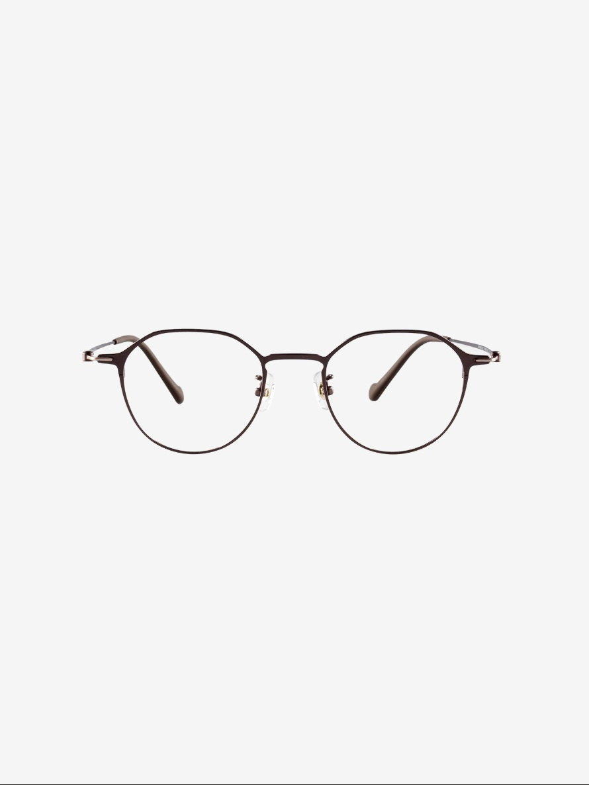
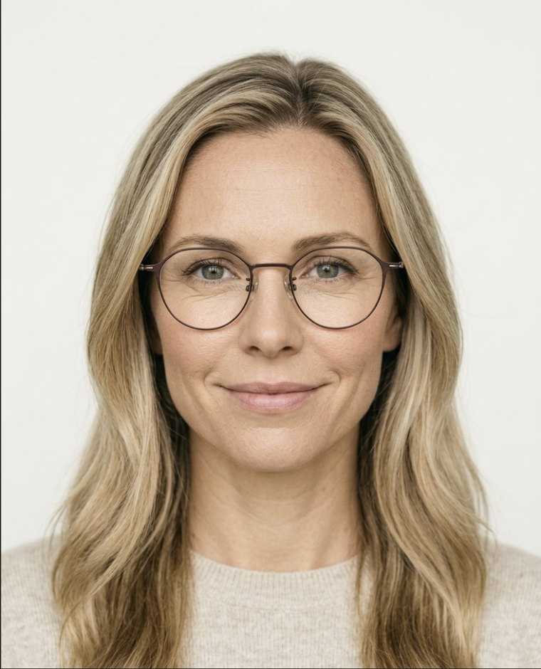
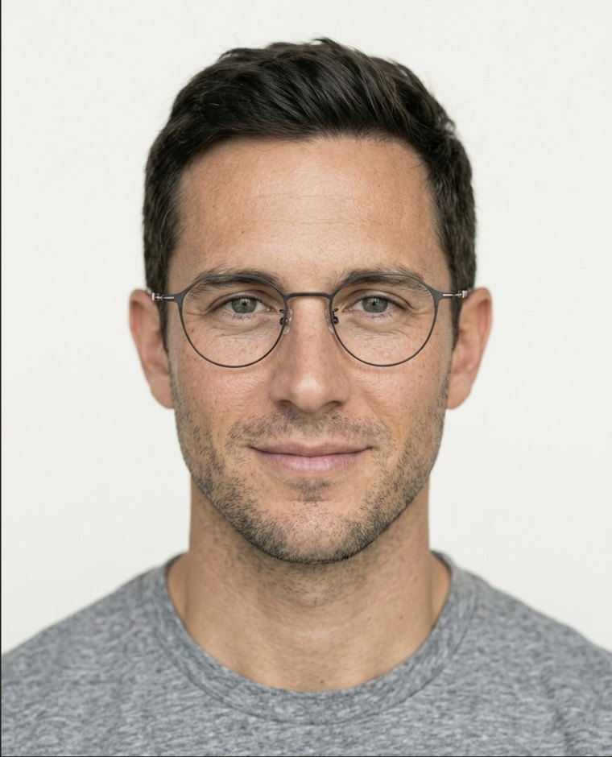

Noon Shop Eyewear · September 2026

One spreadsheet in.
A whole store out.
Scroll, swipe or press →
01 · Sensing
Every frame
you have
found, read and pulled in
02 · The engine
The cloud
feeds Solis
and Solis makes the product
03 · Naming
A style code is not a product
DR22009
Dormann · the Americas · 3 of 29 cities assigned
04 · Words and search
- 49mm lens, 21mm bridge, 143mm temple
- Optical frame, demo lenses fitted
- Five colorways, every one photographed
- Made in Korea
05 · The cast
Eight faces, locked the same eight, across the whole catalog
06 · Generated

Source photo Anchor
Anchor
- Face matches the model’s anchor
- Shape, bridge and material match the product photo
- Lens, bridge and front width in proportion
- Eyes fully in focus, no refraction blur
- Visible pore detail, not plastic or AI–smooth
- Setting, light, palette and crop match the scene
07 · One frame, four faces
Built for real faces shown on them, at the same moment
Source · once




08 · Live
On the store, the same minute Shopify, responsive, try–on, feeds
Nashville
Dormann · DR22009 · 49 ▫ 21 – 143
$285 · frames only, demo lenses fitted
Try–on · live camera
One row in.
A sold pair out.
For one frame, or your entire catalog.
Figures come from the running content engine: 100 styles, 441 colorways, the six–point image check, the city registry and the publish gate. DR22009 is real and genuinely unnamed, so its description and search copy are shown in the engine’s own templates rather than as a captured run; the weight line is DR23105’s actual result. The storefront is a prototype heading for a custom Shopify theme, and try–on is a browser–camera demo rather than tracked AR fit.